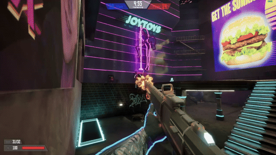
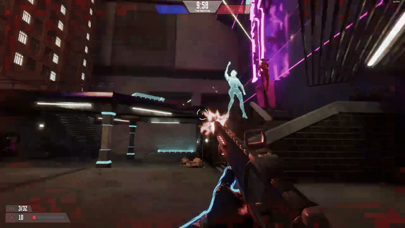

Ultranatural
Unreal, Blueprints


Ultranatural is a first-person shooter developed in Unreal Engine with a focus on multiplayer action. Through this project, I gained valuable experience with Unreal Engine and multiplayer game development fundamentals. Working on Ultranatural helped me develop strong team collaboration skills and understand how different game systems interact in a networked environment.
About the Game


Ultranatural is a fast-paced PvP arena shooter that focuses on skill and speed. Players engage in intense duels or team matches on a custom map, using a single weapon. The game emphasizes action, competition, and quick reflexes, offering a challenge for all skill levels. With simple server hosting, it's easy to join matches with friends, making Ultranatural suitable for both casual and competitive play. Whether you enjoy fast battles or team strategy, Ultranatural has something for everyone.
Features
- Spectator Cam
- Host and join system
- Team deathmatch
- Jumppads
- Melee Attack
- VFX and Sound system that supports multiplayer
Responsibilities
For Ultranatural, I was responsible for programming the multiplayer functionality and core features of the game. This time, I had the support of my team, as everyone contributed using blueprints. My role also included creating the technical design document, organizing the project structure, and managing version control. Additionally, I assisted with animation, sound, and VFX, ensuring they worked correctly in the multiplayer environment. I spent a significant amount of time debugging and fixing issues, which involved frequent playtesting with others to ensure everything functioned properly in multiplayer scenarios.
What I learned
For Ultranatural, I had to learn both Unreal Engine and multiplayer development, which proved to be a significant challenge. Although I eventually managed, the steep learning curve made the process less efficient than it could have been. I learned that multiplayer adds considerable complexity, requiring every feature to be compatible and tested with another player. However, I also discovered that Unreal is a great engine for multiplayer games. This project highlighted the importance of a strong team—without their support, I likely would have struggled. Additionally, I realized the value of gaining experience with smaller projects before tackling something this ambitious, as it provides the opportunity to learn in a more controlled environment.
Scripts
You can find and download the project here.
Tools
- Unreal
- Steam Advanced Sessions Plugin
My Team
- Art Lead & Environment: Jan-Lasse Kallweit
- Character Artist: Vadym Kisterskyi
- Engineer: Benjamin Köcher
- Game & Level Designer: Moritz Stephan
- Producer: Martin Kruse
- Prop & Environment: Alena Franke
- Prop, Animation & UI/UX: Oscar Schmidlin